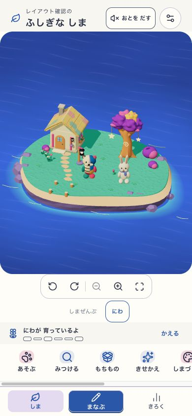
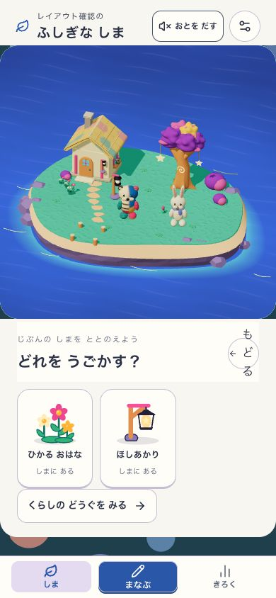
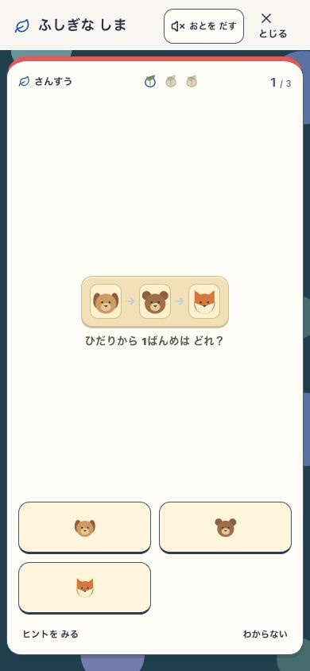
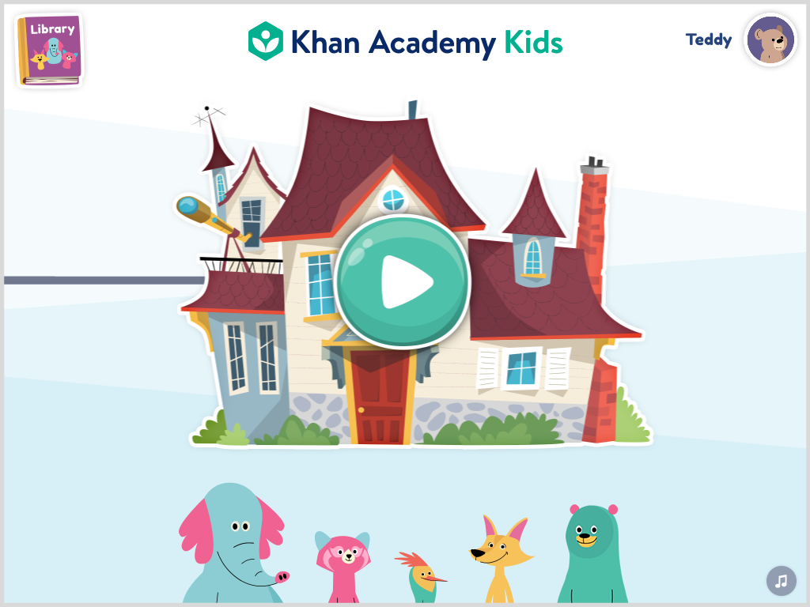
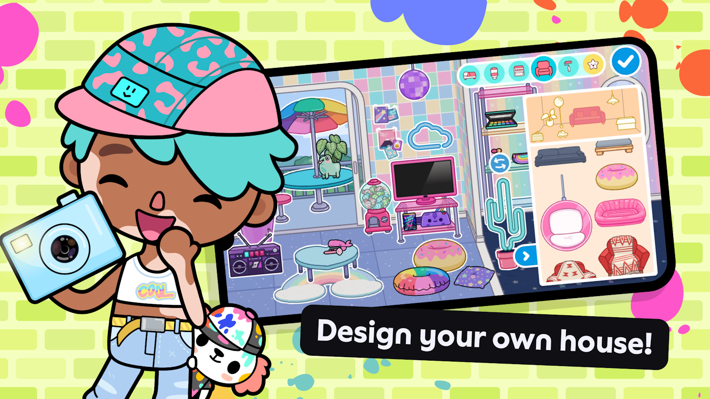

01 / 島広がったのは、海の余白。
住民と家は小さいまま。カメラ・地区・育成・機能・ナビが下に積み重なっています。
Display layout strategy · 2026.09.09
画面ごとの主役を決め、必要なときだけ道具を開く。
島・学習・一覧・編集・思い出・設定の6種類で、
面積の配り方から見直す提案です。
比較調査・設計提案
新しい構成は未実装。公開中のアプリの品質認定ではありません。
01 / Diagnosis
タブを小さくしても、島の枠を高くしても、主役そのものが見やすくなるとは限りません。今回の実画面で特に残った3点です。

01 / 島住民と家は小さいまま。カメラ・地区・育成・機能・ナビが下に積み重なっています。

02 / もちもの一覧でも島が先に大きく出ます。対象を選ぶ画面は、品と状態を先に見せたいです。

03 / 学習大きい学習パネルの中に、小さい問題が孤立。3択と筆算で、必要な配置を変えます。
02 / Direction
入口をすべて常設すると世界が縮み、すべて隠すと使い方が分かりません。明示的な入口を残し、操作の続きを開く構成にします。
移行は小さいものの、操作帯の多さと画面ごとの主役の不一致が残ります。
普段は暮らしを広く。対象を選んだら、その対象の道具を下または横へ開きます。
多くの機能を探しやすい構成。島のホームに使うと、島が一覧の挿絵になります。
03 / Layout contracts
下の項目で、スマホと広い画面の配置を比較できます。色付きの領域は役割の説明図で、完成画面のデザインではありません。
「しま」「きろく」は行き先。「まなぶ」は開始操作。通常のタブ選択で先頭へ戻る現行仕様と、学習からの復帰は区別します。既存19 viewとの対応・保存・履歴の契約
04 / Benchmarks
学習5、世界・育成5、コンテンツ2。公式ヘルプと掲載画像を比較しました。外部アプリのログイン後の操作監査や、子どもの利用実験ではありません。


| アプリ / 根拠 | Sansuで採る原理 | そのまま採らないもの |
|---|---|---|
| 比較データを読み込み中… | ||
4つの行き先と中央の「はじめる」を分離し、活動は全画面に開く構造をコードで確認。Sansuでは項目数をコピーせず、「しま・きろく」の行き先と「まなぶ」の開始操作を分けます。調査したコードと相違点
Apple：タブは行き先、Android：行き先と操作の役割。中央の開始ボタンは、現在地を示すタブと意味を分けて実装する提案です。
05 / Current-run evidence
画像を押すと原寸で開きます。0回答の新規プロフィールで、初回入口、学習の開閉、設定、記録、持ち物、配置の取消、アルバム、縦横切替を操作しました。
今回の実画面を読み込み中…
06 / Build sequence
すべてを一度に変えず、主役が大きく見え、行き来も迷わない一連の画面として検証します。
「もどる」「とじる」の1文字折り返しを解消。「もっと見る」が内容を開くか、内容がなければ出ないようにする。
住民・家・育成対象を近くに。道具はラベル付きの入口から開き、全画面幅で主要操作を画面内に収める。
一覧では品、編集では実景と道具。取消・確定・学習の開閉まで一続きで検証する。
3択、数値、筆算に合う配置へ。全テンキーと支援を保ち、前置き画面や追加操作を増やさない。
作品を見る、学習の事実を見る、保護者が管理する、の目的に合わせて密度と分類を整理する。
Visual appeal
世界枠の広さと、住民の見える大きさを別に比較。成熟した島・展示の多い状態も実画面で確かめる。
Comprehension & safety
子どもが学習・道具・退出を見つけられるかを観察する。今回の独立参加者は0人で、理解成功は未判定。
Runtime integrity
下書き、保存、履歴、非表示の処理停止、PWAを別に検証。技術テストだけで見た目の弱さを合格にしない。